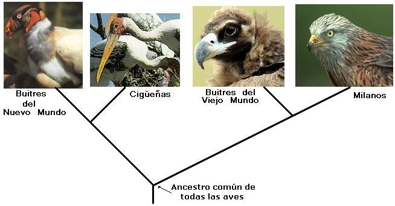
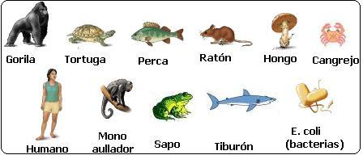

Actividad sugerida para el aula de clase en el desarrollo de la temática de clasificación de los seres vivos
Para desarrollar la siguiente actividad es necesario que te hayas documentado sobre lo que es un cladograma. Si no lo sabes te recomendamos leer Cladogramas: Ilustrando el parentesco evolutivo. Si tienes duda sobre algún término presente en este taller te recomendamos consultar el glosario que se encuentra al final del presente texto o a tu profesor.
En biología evolutiva se considera que las características anatómicas más generalizadas en un grupo taxonómico son más antiguas, mientras que las que se encuentran restringidas a grupos más pequeños son más recientes. La gráfica que se muestra a continuación ejemplifica esta situación para los vertebrados:

Según lo anteriormente expuesto se puede afirmar correctamente que:
La aparición del pulgar oponible precedió a la aparición del pelo.
La aparición del pelo en los mamíferos se dio mucho antes que la aparición del pulgar oponible en los primates.
La evolución de la placenta fue posterior a la evolución de un mentón en la mandíbula.
La presencia de cuatro extremidades en los vertebrados es una característica de evolución más reciente que la del cráneo.
Responde de la siguiente manera:
Marca A si 1 y 2 son correctas. Marca B si 2 y 3 son correctas. Marca C si 3 y 4 son correctas. Marca D si 2 y 4 son correctas.
Responde la siguiente pregunta teniendo en cuenta el cladograma que se muestra a continuación:
Como se muestra en el diagrama, el buitre del Nuevo Mundo pertenece a un linaje diferente al buitre del Viejo Mundo. Sin embargo, al observarlos presentan semejanzas estructurales y de comportamiento.
Dichas similitudes serían más probablemente el resultado de
La adaptación a estilos de vida muy semejantes.
cruces permanentes entre buitres del Nuevo Mundo con buitres del Viejo Mundo.
ritmos diferentes de evolución y adaptación.
presentar un ancestro común con líneas evolutivas dependientes.
El siguiente es un cuadro comparativo de las características de los huevos de cuatro grupos de reptiles
Si se sabe que estos organismos están emparentados evolutivamente, el árbol filogenético que mejor relacionaría estos organismos por el tipo de huevo es

Algunos grupos de animales presentan metamerismo, es decir tienen su cuerpo organizado en una serie de elementos que se repiten. Los anélidos y los artrópodos son grupos de animales que presentan metamería, mientras que los moluscos no. Si sabemos que las características homólogas de los organismos reflejan un antepasado común se puede afirmar que el diagrama que mejor refleja las relaciones evolutivas entre artrópodos, moluscos y anélidos es:
El siguiente árbol filogenético representa la historia evolutiva de un grupo de organismos.
De acuerdo con esto podría afirmarse que existe un ancestro común en el punto A. 5 para A, B, C, D, E y F B. 3 para B, C y D C. 2 para B, C, D, E y F D. 4 para A, B, C y D
Responde las preguntas 6 - 11 teniendo en cuenta el siguiente cladograma

Según el cladograma se puede afirmar que la especie más emparentada con el caballo es
La vaca.
El koala.
La vaca y venado por igual.
La tucha.
La característica Nº 2 es:
Glándulas mamarias
Mandíbula formada por un solo hueso.
Pelo
Todas las anteriores.
Son organismos con 4 “estómagos”:
Vaca y venado.
Caballo y vaca.
Cocodrilo, Koala y caballo.
Solo el cocodrilo.
Con toda seguridad el grupo indicado como clado A son:
los vertebrados.
los tetrápodos.
los cordados.
los amniotas.
El grupo señalado como clado B cumple con todas las siguientes características excepto:
Poseen un solo hueso formando la mandíbula.
Poseen glándulas sebáceas y sudoríporas en la piel.
Poseen pulgar oponible.
Poseen respiración pulmonar.
El grupo indicado como clado C son:
Los primates.
Los cordados.
Los vertebrados.
Los mamíferos euterios.
El organismo ancestral señalado con el Nº 2 es el antepasado de
Todos los amniotas.
El cocodrilo, el koala y el caballo.
Los mamíferos.
El caballo, la vaca y el venado.
El ancestro común más próximo de la vaca y el venado está señalado con el número:
A. 1. B. 2. C. 3. D. 4.
El antepasado de todos los mamíferos euterios está señalado con el número:
A. 1. B. 2. C. 3. D. 4.
Responde las preguntas 15 y 16 teniendo en cuenta el siguiente cladograma

Según el diagrama se puede afirmar todo excepto que
Las euglenas no son unicelulares.
Los musgos carecen de xilema y de floema para transportar el agua y los nutrientes.
Los helechos se reproducen por semillas.
Toda angiosperma es también espermatofita.
De la gráfica se puede inferir que
Todas las plantas descienden de las euglenas.
La palma de coco es el organismo más evolucionado.
Todos los seres vivos comparten una comunidad de descendencia.
Las plantas con flores son el grupo más antiguo de vegetales.
Teniendo en cuenta el anterior cladograma califica los siguientes enunciados como falsos o verdaderos:
El pino comparte con el helecho la característica de poseer vasos conductores. (F/V)
Se puede decir que toda planta de cerezo posee flores, semillas, sistema vascular y es pluricelular. (F/V)
Los musgos carecen de xilema y de floema para transportar el agua y los nutrientes. (F/V)
Una palma de coco carece de flores, pero tiene semillas. (F/V)
Ubica los organismos que se relacionan a continuación en el cladograma que se ilustra abajo. Ten en cuenta que las características compartidas ya están indicadas.

Según el anterior cladograma responde:
¿Qué características son más antiguas en la evolución del linaje humano?
¿Qué características de las señaladas en el cladograma comparten el hombre y el gorila?.
¿Es correcto afirmar que las percas son “más evolucionadas” que los tiburones por estar ubicadas a la derecha de estos en el cladograma?
¿Qué organismos del cladograma son eucariotas?
¿Por qué crees que todos los seres vivos se pueden ubicar en grupos anidados dentro de otros grupos?
Glosario
Amniota: Vertebrados cuyos embriones poseen una membrana denominada amnios. El amnios encierra un espacio lleno de líquido (el líquido amniotico) alrededor del embrión en desarrollo. Los reptiles, aves y mamíferos son amniotas.
Anélidos: Gusanos con celoma (cavidad del cuerpo revestida por el peritoneo) con el cuerpo dividido en anillos semejantes. Los anélidos poseen un sistema nervioso que consta de ganglios cerebroidios y dos cordones nerviosos fusionados que recorren el cuerpo; su sistema circulatorio es cerrado, con vasos circulatorios musculares, impulsan la sangre por medio de arcos aórticos. Los anélidos más representativos son la lombriz de tierra y las sanguijuelas.
Angiosperma: Son las plantas que producen flores. El término angiosperma proviene del griego angeion = vaso y sperma = semilla. Literalmente significa “semilla guardada o semilla cubierta” ya que en ellas las semillas están protegidas por los ovarios maduros (el fruto).
Artrópodos: Animales de simetría bilateral con patas articuladas y esqueleto externo. El grupo de los artrópodos incluye a los insectos, arácnidos, crustáceos, las cacerolas de mar, trilobites, entre otros. Los artrópodos tienen un sistema muscular complejo, el cual se une a su exoesqueleto; un sistema circulatorio abierto con un corazón contráctil y un sistema nervioso similar al de los anélidos.
Cordados: Animales celomados que poseen, al menos en estado embrionario, las siguientes características: Una varilla esquelética en la parte dorsal, llamada notocorda, hendiduras faríngeas, cordón nervioso tubular dorsal, cola postanal. Los seres humanos son cordados, solo que las características del grupo están presentes mientras que están desarrollándose como embriones. Los vertebrados son un subgrupo de los cordados.
Espermatofita: Plantas que se reproducen por semillas. Este grupo incluye a las gimnospermas y angioespermas.
Eucariotas: Célula que posee un núcleo delimitado por una membrana (la membrana nuclear), además de organelos como mitocondrias, retículo endoplasmático y aparato de Golgi. Las células eucariotas poseen cromosomas en los que el ADN está asociado a proteínas denominadas histonas. El término eucariota también se aplica a los organismos formados por este tipo de células.
Euglena: Protisto unicelular flagelado sin pared celular que habita principalmente el agua dulce. Las euglenas poseen clorofilas a y b como pigmentos fotosintéticos, y utilizan la molécula de paramilón como material de reserva.
Euterio: Mamífero en el cual se invierte más tiempo y energía en la gestación y que dan a luz crías en un estado avanzado de desarrollo. Estos mamíferos tienen una placenta compleja (corioalantoidea). Los humanos, los conejos y los murciélagos son euterios; los canguros y demás marsupiales no son euterios porque ellos poseen una placenta primitiva (coriovitelina) además que dan a luz crías demasiado inmaduras.
Filogenético: Que hace referencia a la historia evolutiva de un grupo de organismos.
Floema: Tejido vascular de las plantas traqueofitas que conducen los azucares y otras moléculas elaboradas desde las hojas hasta partes.
Glándula sebácea: Estructuras de la piel de los mamíferos encargadas de producir grasas o lípidos que permiten el cuidado de la piel.
Gimnosperma: Plantas con semillas que no están encerradas en el ovario. El término significa literalmente “semillas desnudas”. Los pinos, cipreces y araucarias con las gimnospermas más familiares.
Grupo taxonómico: Grupo de clasificación de seres vivos.
Mamífero: Vertebrados que se caracterizan por tener pelo, glándulas mamarias, tres huesecillos en el oído medio, glándulas sebáceas en la piel, corazón dividido en cuatro cavidades, y que alimentan a sus crías con leche. Los humanos, las ratas y los delfines son ejemplos de mamíferos.
Metamería: Tipo de organización corporal de los animales a base de elementos repetidos (metámeros).
Metámero: Unidad corporal que se repite a lo largo del eje longitudinal de cuerpo de un animal. Los términos somito y segmento pueden utilizarse como sinónimos.
Moluscos: Grupo de animales invertebrados que se caracterizan por poseer simetría bilateral, un píe muscular, un órgano raspador denominado rádula y un par de pliegues en la parte dorsal llamada manto. Los caracoles, babosas de mar, babosas de tierra, calamares y pulpos son los moluscos más conocidos.
Musgos: Planta poco compleja que carece de sistema vascular, raíces verdaderas, hojas verdaderas y que también carece de flores.
Nuevo Mundo: Término con el que se designa a América.
Omoplato: Huesos planos, pares, de forma casi triangular que se encuentran en la espalda del hombre y los grandes simios, detrás de la caja torácica y en otros animales se encuentra a los lados del cuerpo. El omoplato se articula al húmero (hueso del brazo) por medio de la cavidad glenoidea y a la clavícula (en los mamíferos que aún la conservan) por una saliente denominada acromión. En el hombre y los grandes simios el omoplato tiene su parte más ancha en la parte superior, mientras que es más angosto en la inferior.
Perca: Pez óseo que tiene es cuerpo ancho y esbelto, con las dos aletas dorsales separadas y las pélvicas cercanas a la “garganta”; El opérculo (repliegue que cubre las branquias dejando un orificio) de las percas termina en una punta similar a una espina. La perca (Perca fluviatilis) mide 25 cm. Estos peces están adaptados al hemisferio Norte.
Placenta: Tejido que permite el intercambio de nutrientes y desechos entre la madre y el embrión en los mamíferos placentarios. La placenta proviene de la interacción de entre el revestimiento interno del útero de la madre y el corión (membrana extrafetal).
Placentario: Mamífero en el que sus embriones se desarrollan en una placenta corionalantoidea y cuya inversión reproductiva se centra en la gestación (a diferencia de los marsupiales que invierten en la lactancia). Todos los mamíferos exceptuando los monotremas y marsupiales son placentarios. El término placentario es sinónimo de euterio.
Primates: Mamíferos placentarios que se caracterizan por tener visión binocular, pulgares oponibles, clavículas presentes y funcionales. Los humanos, los chimpancés y los lémures son ejemplos de primates.
Semilla: Estructura compleja formada por la maduración del óvulo de las plantas con semillas (espermatofitas) después de la fecundación.
Sistema vascular: En vegetales hace referencia al sistema formado poe el xilema y el floema, por el cual se conducen los fluidos.
Traqueofitas: Grupo de vegetales que desarrollaron el sistema vascular. Los helechos, gimnospermas y angiospermas pertenecen al grupo de las traqueofitas.
Tetrápodos: Grupo de vertebrados que heredaron cuatro extremidades a partir de las aletas lobuladas de los peces sarcopterigios. Los anfibios, reptiles, aves y mamíferos son tetrápodos.
Vertebras: Huesos cortos en forma de anillos que forman la columna vertebral.
Viejo Mundo: Término con el que se designa a Europa, Asia y África.
Xilema: Tejido vascular complejo de algunos vegetales a través del cual es conducida la mayor parte del agua y de los minerales desde las raíces a otras partes de la planta . El xilema constituye la madera de los árboles y arbustos.
Volver a la sección Ciencias de los orígenes
Comentarios
Comments powered by Disqus